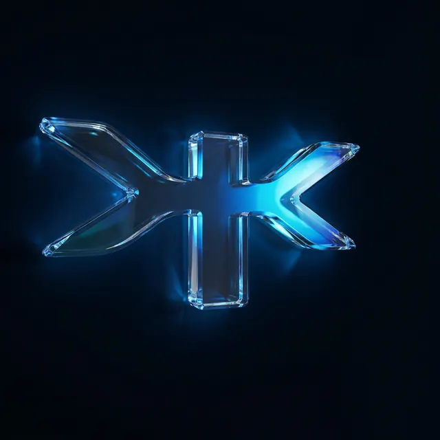

1. Tu isotipo como firma
Se dibuja con un trazo de luz y se vuelve cristal. Abre la página, cierra el pie y aparece en el ícono de la pestaña.
Hoja de muestra · no se publica

Diseñamos e implementamos agentes de IA, CRM y automatizaciones conectados en un solo sistema que atiende, califica y cierra por ti, 24/7.
Tienes activado "Reducir movimiento": aquí ves una versión sin desplazamientos. Apágalo para ver la animación completa.
Casi todo el sitio vive en el negro azulado. El azul Ingeniak solo aparece donde hay que hacer algo; el cian es el brillo de la inteligencia artificial.
#03040B#0055FF#00E5FF#455DFF#0A1F4C#FFFFFF#9EB0C7#FFB547Sistemas que venden 24/7.
Tu crecimiento tiene un protocolo, nosotros lo activamos.
No vendemos licencias sueltas. Entregamos sistemas funcionando, integrados con tus herramientas y con métricas claras de impacto en 60 a 90 días.
VERIFY · KONCEPT · TRANSFORM · OPERATE · RISE
Se dibuja con un trazo de luz y se vuelve cristal. Abre la página, cierra el pie y aparece en el ícono de la pestaña.
Las ramas de tu símbolo se vuelven líneas con el mismo ángulo, por donde viaja un pulso de luz. Conectan servicios, pasos de VKTOR™ y herramientas.
El cuadrado de tu isotipo es la viñeta de las etiquetas, el remate de cada línea y el indicador de "en vivo".
Los fondos de ondas de tu manual dan profundidad; encima, tarjetas de cristal con una fuga de luz azul y cian.
Al pasar el mouse se aclara, brilla y la flecha apunta hacia arriba. Al tocarlo se hunde un poco. Es el único botón azul del sitio: siempre lleva a agendar.
Un agente conversacional que califica, agenda citas y da seguimiento sin intervención humana.
Si apruebas esta dirección, armo la estructura completa de secciones y los textos clave antes de construir.